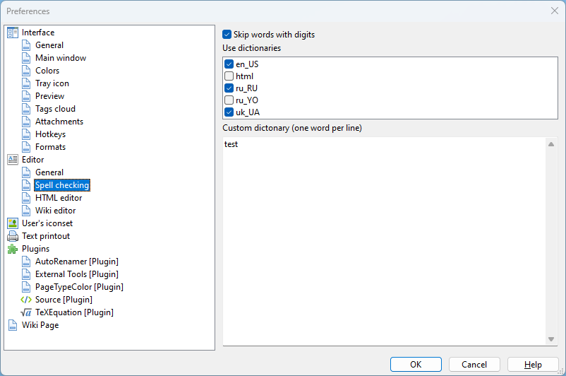

Editor - Spell checking

In the "Spell checking" section one can select dictionaries for spell checking.
The spell checking dictionaries are located in the spell subdirectory of the program's directory as well as the spell directory of the settings directory (in case of Windows 7 and above, it is C:\Users\USERNAME\AppData\Roaming\outwiker\spell; in case of Linux, it is ~/.config/outwiker/spell by default).
It is possible to set custom dictionary which contains words added by user.